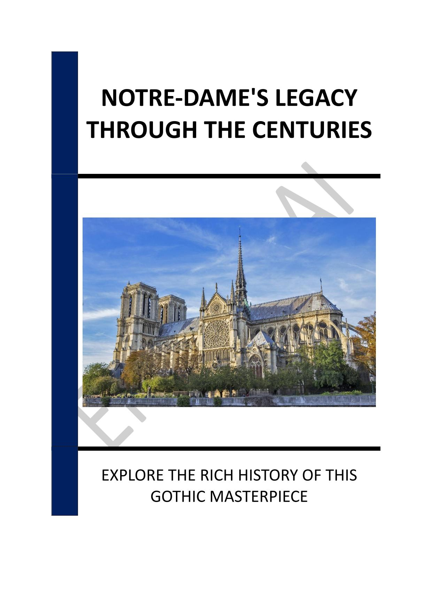

- INTRODUCTION - NOTRE-DAME: A TIMELESS SYMBOL OF RESILIENCE
- Chapter 1 - THE ORIGINS OF NOTRE-DAME: A HISTORICAL OVERVIEW
- Chapter 2 - ARCHITECTURAL INNOVATIONS OF THE GOTHIC ERA
- Chapter 3 - THE ROLE OF NOTRE-DAME IN FRENCH HISTORY
- Chapter 4 - RESTORATION EFFORTS: THE WORK OF EUGENE VIOLLET-LE-DUC
- Chapter 5 - THE 2019 FIRE: CAUSES AND CONSEQUENCES
- Chapter 6 - THE GLOBAL RESTORATION PROJECT: VISION AND CHALLENGES
- Chapter 7 - MODERN TECHNIQUES IN HISTORICAL RESTORATION
- Chapter 8 - THE REOPENING CEREMONY: A SYMBOL OF RESILIENCE
- CONCLUSION - PRESERVING NOTRE-DAME: A LEGACY FOR THE FUTURE
📄 Consult the book's appendices
Legal notices